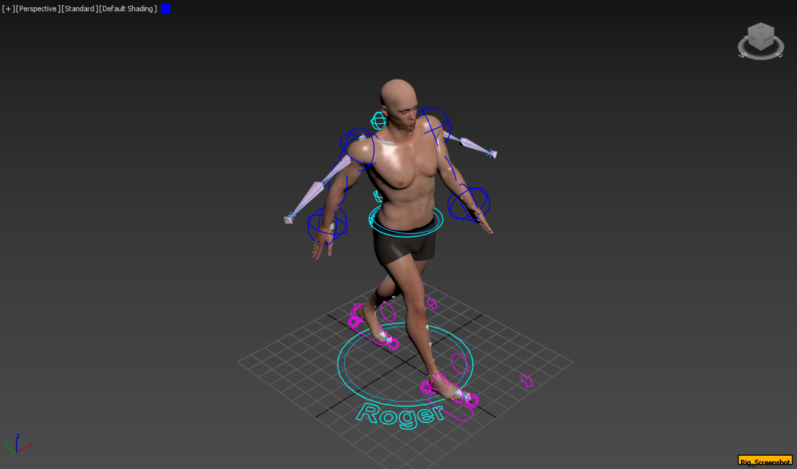
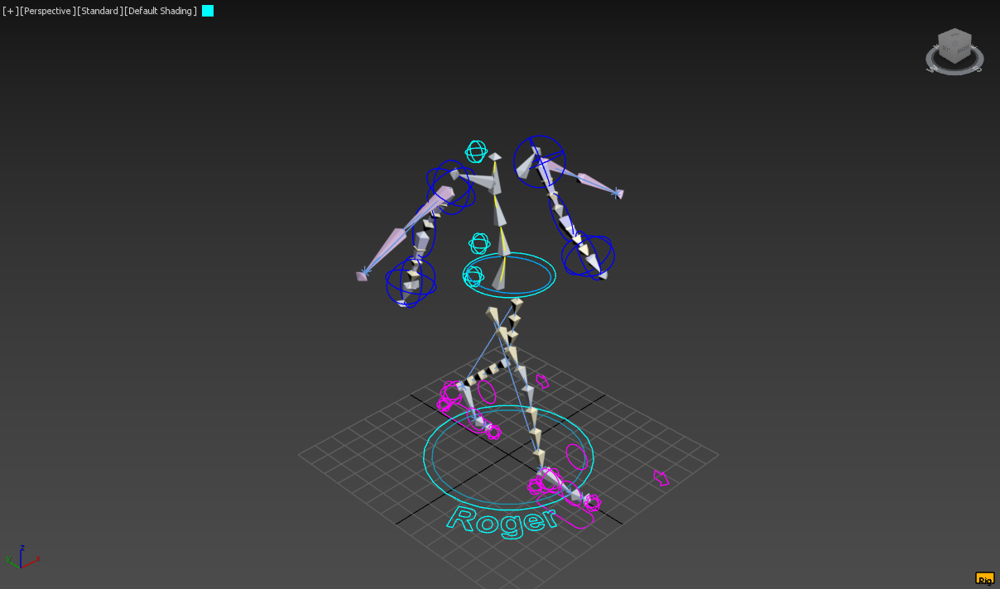

Other Projects
Roger Walkcycle (2025)
This project focuses on creating a realistic walk cycle animation in 3ds Max through the process of character rigging and skinning. The rig was designed with advanced setups to ensure flexibility and natural movement across the entire body. Key rigging features include:
- Arms: IK/FK Blend
- Legs: Triple IK Setup
- Spine: Stabilized Spline IK
- Forearms: Twist bones
- Controls: Multiple main control objects
Used Tools:



Project: APEX
This project shows a futuristic environment in a cyberpunk style. This animation was used as a background-hero for the "Project: APEX" website, a project for the "Responsive Webdesign" course @ Furtwangen University.
Used Tools: